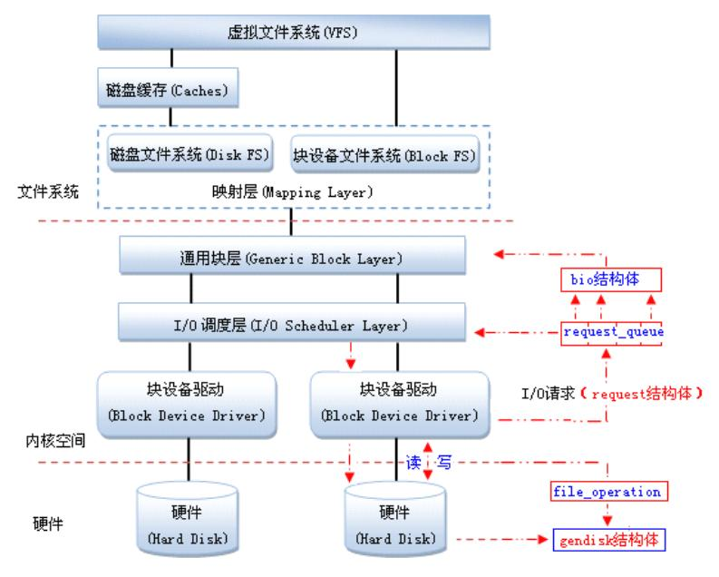
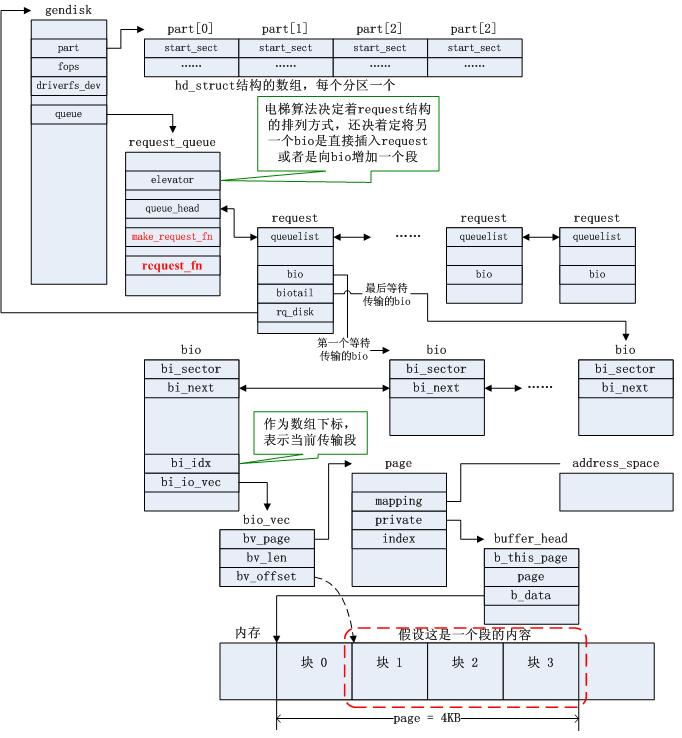
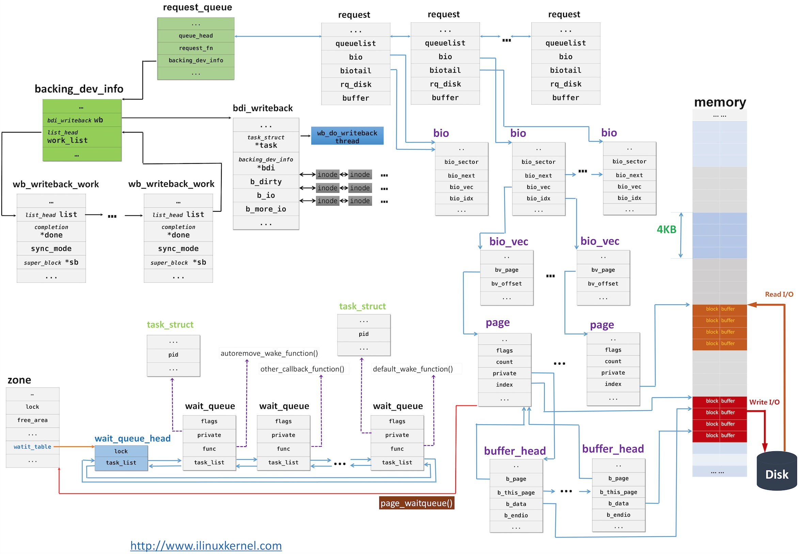

Null Block Device
nullblk 即 Null block device driver，空块设备（/dev/nullb*），用于对各种块层实现进行基准测试。它模拟 X GB 大小的块设备。它不执行任何读/写操作，只是在请求队列中将它们标记为完成，用于对各种 block-layer 实现进行基准测试。
nullblk 已经被合入 Linux Kernel 主线，具体用法可以参考内核文档。
TODO: nullblk 的工作原理分析



https://blog.csdn.net/weixin_34216107/article/details/92562214
Null block device driver
Null block device driver
==================================
I. Overview
The null block device (/dev/nullb*) is used for benchmarking the various
block-layer implementations. It emulates a block device of X gigabytes in size.
The following instances are possible:
Single-queue block-layer
- Request-based.
- Single submission queue per device.
- Implements IO scheduling algorithms (CFQ, Deadline, noop).
Multi-queue block-layer
- Request-based.
- Configurable submission queues per device.
No block-layer (Known as bio-based)
- Bio-based. IO requests are submitted directly to the device driver.
- Directly accepts bio data structure and returns them.
All of them have a completion queue for each core in the system.
II. Module parameters applicable for all instances:
queue_mode=[0-2]: Default: 2-Multi-queue
Selects which block-layer the module should instantiate with.
0: Bio-based.
1: Single-queue.
2: Multi-queue.
home_node=[0--nr_nodes]: Default: NUMA_NO_NODE
Selects what CPU node the data structures are allocated from.
gb=[Size in GB]: Default: 250GB
The size of the device reported to the system.
bs=[Block size (in bytes)]: Default: 512 bytes
The block size reported to the system.
nr_devices=[Number of devices]: Default: 1
Number of block devices instantiated. They are instantiated as /dev/nullb0,
etc.
irqmode=[0-2]: Default: 1-Soft-irq
The completion mode used for completing IOs to the block-layer.
0: None.
1: Soft-irq. Uses IPI to complete IOs across CPU nodes. Simulates the overhead
when IOs are issued from another CPU node than the home the device is
connected to.
2: Timer: Waits a specific period (completion_nsec) for each IO before
completion.
completion_nsec=[ns]: Default: 10,000ns
Combined with irqmode=2 (timer). The time each completion event must wait.
submit_queues=[1..nr_cpus]:
The number of submission queues attached to the device driver. If unset, it
defaults to 1. For multi-queue, it is ignored when use_per_node_hctx module
parameter is 1.
hw_queue_depth=[0..qdepth]: Default: 64
The hardware queue depth of the device.
III: Multi-queue specific parameters
use_per_node_hctx=[0/1]: Default: 0
0: The number of submit queues are set to the value of the submit_queues
parameter.
1: The multi-queue block layer is instantiated with a hardware dispatch
queue for each CPU node in the system.
no_sched=[0/1]: Default: 0
0: nullb* use default blk-mq io scheduler.
1: nullb* doesn't use io scheduler.
blocking=[0/1]: Default: 0
0: Register as a non-blocking blk-mq driver device.
1: Register as a blocking blk-mq driver device, nullblk will set
the BLK_MQ_F_BLOCKING flag, indicating that it sometimes/always
needs to block in its ->queue_rq() function.
shared_tags=[0/1]: Default: 0
0: Tag set is not shared.
1: Tag set shared between devices for blk-mq. Only makes sense with
nr_devices > 1, otherwise there's no tag set to share.
zoned=[0/1]: Default: 0
0: Block device is exposed as a random-access block device.
1: Block device is exposed as a host-managed zoned block device. Requires
CONFIG_BLK_DEV_ZONED.
zone_size=[MB]: Default: 256
Per zone size when exposed as a zoned block device. Must be a power of two.
zone_nr_conv=[nr_conv]: Default: 0
The number of conventional zones to create when block device is zoned. If
zone_nr_conv >= nr_zones, it will be reduced to nr_zones - 1.
Q：nullblk 是什么？
A：nullblk 是 Linux 内核中的一个模块，它是块设备的一种。它可以用于模拟无任何实际存储介质的块设备。通过使用 nullblk，开发人员可以测试块设备的各种功能，而无需实际硬件。这对于开发和测试块设备驱动程序非常有用。
Q：nullblk 是如何工作的？
A：nullblk 模块会创建一个虚拟的块设备，这个设备不会存储任何数据，但是它会像一个真实的块设备一样响应 I/O 请求。当一个应用程序向 nullblk 发送 I/O 请求时，nullblk 会将这些请求传递给相应的块设备驱动程序。因为 nullblk 不实际存储任何数据，所以这些请求不会写入或读取任何数据，而是简单地被忽略掉。
Q：可以用什么命令加载 nullblk？
A：您可以使用以下命令加载 nullblk 模块：
modprobe null_blk
Q：可以使用什么命令卸载 nullblk？
A：您可以使用以下命令卸载 nullblk 模块：
rmmod null_blk
Q：可以用什么命令创建 nullblk 设备？
A：您可以使用以下命令创建 nullblk 设备：
modprobe null_blk nr_devices=1
此命令将创建一个名为 /dev/nullb0 的 nullblk 设备。您可以在需要使用块设备的应用程序中使用此设备。
Q：可以用什么命令查看 nullblk 设备的状态？
A：您可以使用以下命令查看 nullblk 设备的状态：
cat /sys/block/nullb0/size
此命令将输出 nullblk 设备的大小。
可以说，使用 nullblk 并不能在仿真中测量系统的整体性能，它更多的是仿真了 Linux Kernel 中外存的队列执行情况。所以，使用 nullblk 只能用于测试代码能否跑通，可能并不能测量其具体读写性能指标等。
nullblk 的使用和修改
由于 ZNS 实物申请需要一段时间，或者无法申请到，所以我们需要一个仿真环境来进行我们的开发流程。nullblk 可以仿真块设备，并可以设置为只能顺序写的模式，正好仿真 ZNS 中的硬件 Zones。
使用 nullblk
在测试中，可以方便地用脚本调用 Linux Kernel 的系统调用来创建 nullblk。在之前的文档中，我们已经获取了 nullblk-zoned.sh，执行
sudo ./nullblk-zoned.sh 4096 128 64 64
则可以创建一个 8GiB 的仿真 ZNS 磁盘。
在代码中，ZenFS 依赖 libzbd 对下层 I/O 进行控制。